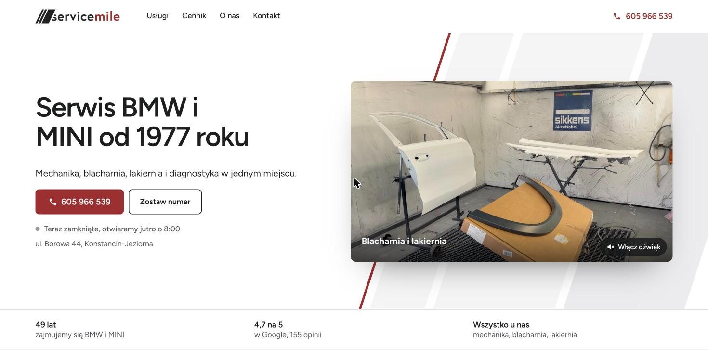
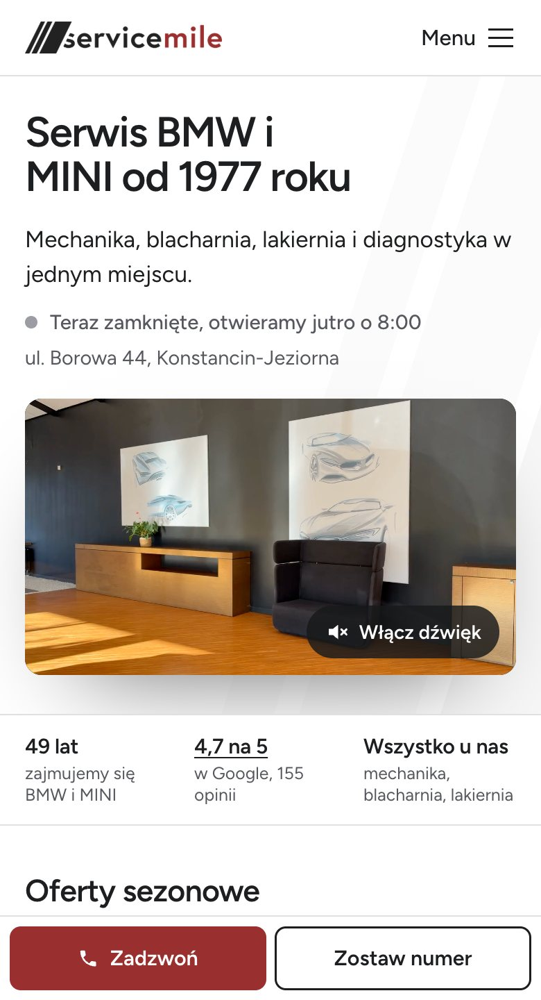
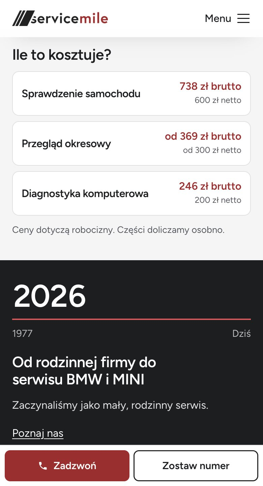
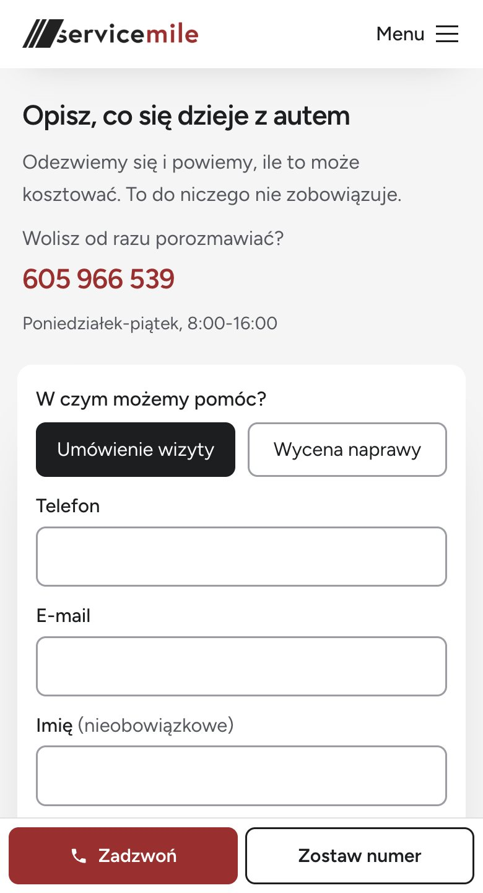
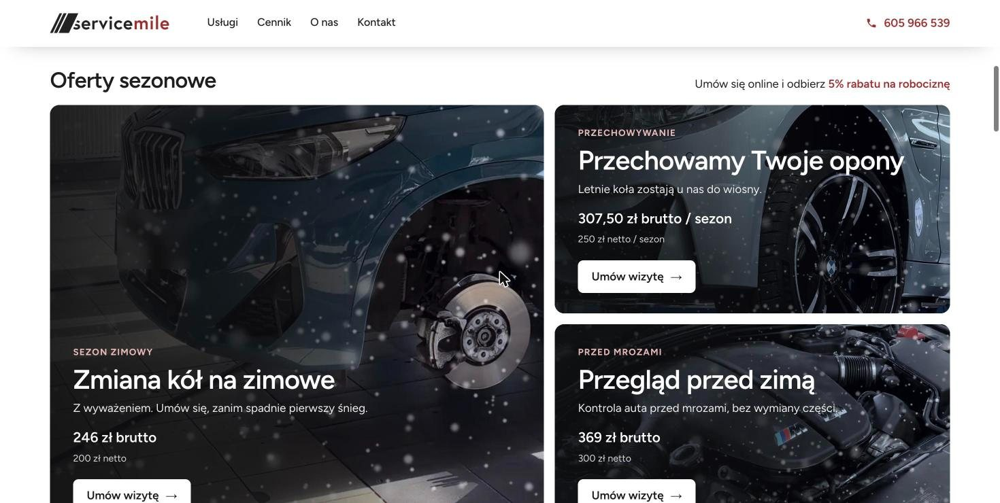

Strona, z której klient od razu dzwoni.
Nowa strona dla Servicemile, serwisu BMW i MINI z Konstancina-Jeziorny, który działa od 1977 roku. Zaprojektowaliśmy ją pod jeden cel: żeby osoba z zepsutym autem w kilka sekund zadzwoniła albo zostawiła numer.


Strona działa na żywo: servicemile.pl
Strona ma sprzedawać, nie tylko ładnie wyglądać.
Klient serwisu zwykle wchodzi na stronę z telefonu, często w stresie: auto się zepsuło albo miał stłuczkę. Nie chce czytać, chce szybko wiedzieć, czy tu mu pomogą, ile to kosztuje i jak się umówić.
Dlatego każdy element strony prowadzi do jednego: telefonu albo zostawienia numeru.
- telefon i „Zostaw numer” od razu na pierwszym ekranie
- stały pasek „Zadzwoń” na dole telefonu
- na żywo: otwarte teraz albo kiedy otwieramy
- ceny najczęstszych usług
- prawdziwe filmy z serwisu i ocena z Google
Każdy ekran prowadzi do kontaktu.
Klient serwisu nie chce czytać. Chce wiedzieć, czy tu naprawią jego auto, ile to kosztuje i jak się umówić.
Numer telefonu zanim zdążysz przewinąć.
Na górze jest to, czego szuka ktoś z problemem: czym zajmuje się serwis, numer telefonu, przycisk „Zostaw numer” i informacja, czy serwis jest teraz otwarty.
Na telefonie przez cały czas widać na dole przyciski „Zadzwoń” i „Zostaw numer”. Po godzinach strona proponuje zostawienie numeru, a serwis oddzwania rano.
Ceny bez dzwonienia i dopytywania.
Najczęstsze usługi mają ceny od razu na stronie: sprawdzenie auta przed zakupem, przegląd, diagnostyka. Do tego oferty sezonowe, jak wymiana kół czy przegląd przed zimą.
Klient, który zna cenę, dzwoni już zdecydowany, a nie tylko „zapytać”.

Formularz, który trafia prosto do panelu serwisu.
Klient wybiera, czy chce umówić wizytę, czy wycenić naprawę, i zostawia telefon. Zgłoszenie od razu pojawia się w panelu serwisu, a do serwisu idzie mail.
Adresy e-mail z formularzy zbierają się w jednym miejscu, więc później można wysłać klientom przypomnienie o przeglądzie albo ofertę sezonową.


Serwis sam zmienia ceny i oferty.
Teksty, ceny i oferty sezonowe zmienia się z panelu serwisu, bez dzwonienia do programisty. Teraz na stronie są np. wymiana kół i przegląd przed zimą.
Strona ma też własne statystyki bez ciasteczek: ile osób weszło, ile zostawiło numer i ile kliknęło w telefon. Widać to w panelu, dzień po dniu.
Szybka i widoczna w Google.
Pomiar w Google PageSpeed Insights, listopad 2026.
Pokażemy, co zmienić, żeby z wejść na stronę robiły się telefony.